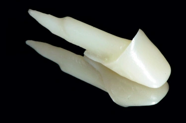

Zirconia Post and Core: Advantages, Disadvantages, and a Comparison with Fiber Posts and Cast Posts

The zirconia post and core was created to solve an esthetic problem: a metal post under a translucent all-ceramic crown can cast a grey shadow. Even so, it is practically never seen in the clinic today.
∆ Advantages of the zirconia post
Zirconia is white and has high flexural strength. It also does not corrode, whereas a base-metal post can corrode in the presence of microleakage and darken the root. Its one-piece CAD/CAM post and core adapts well in wide canals.
∆ Disadvantages of the zirconia post
The zirconia post carries two drawbacks at once. The first is stiffness. Its modulus of elasticity is comparable to that of base-metal alloys and roughly ten times that of dentin, so it transfers stress to the root and the failures are usually root fractures. The second is brittleness. Metal bends under load; zirconia fails suddenly and without warning, particularly in small diameters. If it fractures inside the canal, or the tooth comes to need root canal retreatment, removing it is effectively impossible.
∆ Cementing the zirconia post
It can be cemented with a conventional cement, but the bond strength is lower (1, 2). The rational choice is resin cement, with gentle alumina sandblasting and an MDP-containing primer or cement. Hydrofluoric acid and silane have no effect on zirconia.
∆ Zirconia post or fiber post?
The fiber post has a modulus close to that of dentin, its failures are more often repairable, and it preserves the option of retreatment. It gives the same esthetic result. In canals of ordinary shape and diameter, no reason is left to choose zirconia.
∆ Zirconia post or cast post?
In wide, oval or flared canals where a fiber post does not adapt, the cast post is the better choice. Its stiffness is similar to zirconia, but it is not brittle, it retains well with a conventional cement, and it can be removed.
The color of the metal can be masked with opaque composite over the core, provided the core surface is sandblasted and a metal primer is used. The core must be designed smaller so that the opaquer does not take up the space meant for ceramic. Another route is a zirconia crown of lower translucency with an opaque cement. The opaquer only resolves the coronal portion, and the root shadow under thin gingiva remains. In a thin biotype with a high smile line, the fiber post is the better choice.
∆ Summary
The determining condition in every one of these situations is roughly 2 mm of ferrule (a ring of sound dentin). A post does not reinforce the tooth; it only retains the core.